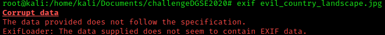
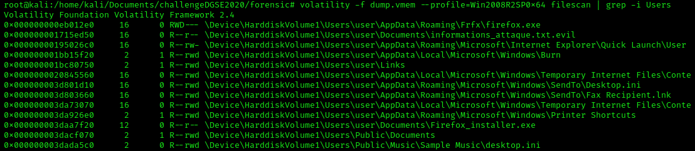

1/ Access log
Reaching the /chat page, Alphone Bertillon, forensic responsible is telling us that somebody has a non-authorized access to our system. He send us a .log file and we have to investigate to find the suspicious IP address.
"access.log" is a log file belonging to an Apache HTTP server, this file records every request for files. If a visitor requests an image, it is logged.
Access log structure: "%h %l %u %t \"%r\" %>s %b \"%{Referer}i\" \"%{User-agent}i\""
%h – Remote host (client IP address)
%l – User identity, or dash, if none (often not used)
%u – Username, via HTTP authentication, or dash if not used
%t – Timestamp of when Apache received the HTTP request
%r – The actual request itself from the client
%>s – The status code Apache returns in response to the request
%b – The size of the request in bytes.
%{Referer}i – Referrer header, or dash if not used (In other words, did they click a URL on another site to come to your site)
%{User-agent}\ – User agent (contains information about the requester’s browser/OS/etc)
The first column display the client IP address, Alphonse Bertillon said that somebody has commited an intrusion in our system, which means that the IP address used by this person shouldn't appear many times in the log.
We will count the number of each IP address and find the one that doesn't appear several times. In Linux, the command awk allows us to display a specific column. Since the IP address column is the first column, we can use the command awk '{print $1}' access.log. Then to make the reading easier, we will delete the duplicate and count how many occurences each IP address appears in the log file. The command awk '{print $1}' access.log | sort | uniq -c can do that.
sort will sort the data in ascending order by default.
uniq -c will erase duplicate and count the number of occurrences. Also, uniq detect repeated lines unless they are adjacent. That's the reason why I have used "sort" before uniq to be sure that it will remove all duplicates.
The IP address (179.97.58.61) that appear only one time in the log, this IP address is probably the one used by the attacker when he has infiltrated our system.
Let's reply to Alphonse Bertillon with that IP address.
2/ Evil Country Landscape
Alphonse has another exercise for us, he found an image in a email attachment, he would like us to find what is the content of that file.
So Alphonse send to us a .jpg file from the chat. According to the red message, the attachment file might contain a malware, so it would be better if we do that in our VM.
curl -O https://challengecybersec.fr/chat/public/uploads/evil_country_landscape.jpg
This curl command is a tool to transfer data from or to a server. With the -O parameter, the command will download a file remotely.
Since it might be a malicious file, let's get more information about the file by extracting the file metadata. The tool exif can be used to extract image metadata.

The data is corrupted. Data corruption is when the data become unusable, unreadable or not accessible by an application.
 The file is more than 300mb, it is huge for a .jpg which is a compressed file... I wonder what do we have inside.
The file is more than 300mb, it is huge for a .jpg which is a compressed file... I wonder what do we have inside.
Binwalk is a tool that will look for binary image for embedded file and executable code.
The .jpg file contains two .zip files, let's use unzip to decompress the .jpg file.
After getting those two images file, let's find out if we can get more information on those files.
Both files are Linux EXT file system, we will mount them to see what data they contain.
Parted command displays the details of the partition.
No information regarding those .img files.
Before mounting the image file, we need to find which loop device it will be associated, run losetup -f to find which loop device is available.
When the image file is associated to a loop device, we can mount the loop device in a mount point. First, let's create a mount point. The mount point will be a folder in /mnt.
"mkdir /mnt/disk1"
"mount /dev/loop"
It is telling us that the filesytem type is "linux_raid_member". This filesystem is part of a software RAID meaning you need at least two disks to read the data in a normal state.
To know what kind of RAID level the disk has, the command "mdadm" will help us.
The raid level used is raid5, it means that the disk use striping with parity. When the data is written to a RAID 5 drive, the system calculates parity and writes that parity into the drive. On the screeshot, it is showing that raid devices is 3, meaning that the raid 5 need 3 disks to function correctly. According to IBM support, RAID 5 protects the data with parity information distributed on all member disks. The data can be recovered from the remaining disks if one disk fails.
So I guess the challenge is to recover the data even if we are missing one disk.
The option "--assemble" of the command mdadm, will assemble the disk to reactivate the raid5. In that case we will assemble /dev/md6 with the two img file. The device mds are used for RAID.
Once it is associated, we can mount the mirror device to a mount point.
After mounting it, it contains a .zip file, we unzip it, but an error appear:
dump.vmem: wirte error (disk full?). Continue? (y/n/^C)
According to the error the mounting point is full, let's move it to another folder and unzip it.
inside of that .zip file, there is a .vmem file which is memory file from a virtual machine. We can analyze it with Volatility.
First thing to do in Volatility, get the suggested profile, run the command "volatility -f dump.vmem imageinfo"
We see that the memery come from Windows Server 2008 R2, or Windows 7. Now we have that information, we might check the list of process, run the command "volatility -f dump.vmem --profile=Win2008R2SP0x64 pslist / pstree / psscan" I have a preference in pstree because we can see clearly the parent process.
From the pstree, we see two vmtoolsd.exe, the suspicious one is the one that run ipconfig.exe its parent process is svchost.exe. Suspicious process: PID 1584. We can also check the dll used by this process with dlllist
. Most of the dll files seems fine, we can still dump the process by running the command: volatility -f dump.vmem --profile=Win2008R2SP0x64 procdump -p 1584 --dump-dir .
In output, we have a file called executable.1584.exe, run sha256sum executable.1584.exe to get the file hash: b62e45b8916d86f4189486d5c17900de744c9d8aca4d003187cca09052c6c231. Then I put the file on Virus Total, if it is a known file in antivirus database.
It seems it is a legitimate process...
Let's see what we can find with others plugins in Volatility. Windows system has a file named Master File Table, and it contains all the files in the disk of the system. According to Alphonse, the agent wanted to contact us, we need to find his message, so let's check for .txt file. The plugin "MFTparser" can extract the data inside the Master File Table.
volatility -f dump.vmem --profile=Win2008R2SP0x64 mftparser | grep txt
 We notice that some files have a strange extension (.txt.evil) and a .lnk file which is a shortcut of the text file informations_attaque.txt. My assumption is that many files of the system are encrypted, a ransomware has certainly spread in the system. Let's use the plugin "Filescan" to look for the file "informations_attaque.txt".
We notice that some files have a strange extension (.txt.evil) and a .lnk file which is a shortcut of the text file informations_attaque.txt. My assumption is that many files of the system are encrypted, a ransomware has certainly spread in the system. Let's use the plugin "Filescan" to look for the file "informations_attaque.txt".
volatility -f dump.vmem --profile=Win2008R2SP0x64 filescan | grep informations_attanck
Filescan also displays the file location in memory by printing the address. The plugin "Dumpfile" will help us to extract the file, it needs as argument the memory address of the file.
volatility -f dump.vmem --profile=Win2008R2SP0x64 dumpfiles -Q 0x000000001715ed50 -D ./ -n
Once extracted, let's see what is the content of that file.
As expected, the file is encrypted. The extension .evil is certainly encrypting files. We must find the initial infection vector of the ransomware, which executable has installed the ransomware. Sometimes, ransomware come from a user behavior, click on a malicious link and download a file. The path of the file is located in the "Users" folder, so let's scan the user's folders.

The file "firefox.exe" seems suspicious to me since that the default folder of Firefox.exe should be "C:\Program Files\Mozilla Firefox". The folder AppData is created for each users to store user data and settings from unwanted change. It contains 3 sub-folders (Roaming, Local, LocalLow), Roaming folder is used to save the user configuration even if the user is using a different laptop (Domain account).
After making some research, I found that this is an indicator of compromise for the ransomware Jigsaw. Here are ransomware file:
- appdata\roaming\frfx\firefox.exe (6c92e26b1c25a7a453fe61ca9c0d07f1)
- appdata\local\drpbx\drpbx.exe (3cad3391255a1142c5f0724fcf8cca35)
- appdata\roaming\frfx\firefox.exe (33fcc8abbc885083646a4079903971bb)
 With the regular expression, it allows us to retrieve only the file containaing "firefox" or "drpbx" in the filename. We have found 3 files, let's extract them with the plugin Dumpfiles in volatility. If we look at the previous screenshot displaying the process list running, the process "drpbx.exe" was running.
With the regular expression, it allows us to retrieve only the file containaing "firefox" or "drpbx" in the filename. We have found 3 files, let's extract them with the plugin Dumpfiles in volatility. If we look at the previous screenshot displaying the process list running, the process "drpbx.exe" was running. volatility -f dump.vmem --profile=Win2008R2SP0x64 dumpfiles -Q 0x000000000eb012e0 -D ./ -n
volatility -f dump.vmem --profile=Win2008R2SP0x64 dumpfiles -Q 0x000000003db6ee60 -D ./ -n
volatility -f dump.vmem --profile=Win2008R2SP0x64 dumpfiles -Q 0x000000003fc11770 -D ./ -n
Then we calculate the sha256 hash of each file:
- file.None.0xfffffa8000e88ea0.drpbx.exe.img: 7f9e1547ef5f3f2baa069e9f7a6bfd3580e0d07c1c86dd92be5503d9500e7b9f
- file.None.0xfffffa8001a29f10.drpbx.exe.dat: cc9550541ca5ac5f22a597e707b9ce9e593b65cd0c88143bd0c240cb5d8d0655
- file.None.0xfffffa800cffff10.firefox.exe.dat: cc9550541ca5ac5f22a597e707b9ce9e593b65cd0c88143bd0c240cb5d8d0655
The Jigsaw ransomware uses an AES encryption algorithm to encrypt these files and add an extension to the end of each encrypted file.The Jigsaw extensions are .fun, .kkk, .btc, .gws, .porno, .pornoransom, .payransom, .paybtcs, .AFD, .payms, .pays, .paym, .paymrss, .payrms, .paymts, .paymds, .paymrts, .epic
, there is no .evil extension.
The Advanced Ecryption Standard is a symmetric-key algorithm, meaning that the same key is used for both encrypting and decrypting the data. Since the program will use the same key to encrypt and to decrypt, let's reverse the program to see if we can find a key. We will start with some static analysis by analyzing the strings. Radare2 is a reverse engineering tool. Rabin2 is a command part of radare2 and can analyze the strings of a program with the option -zz.